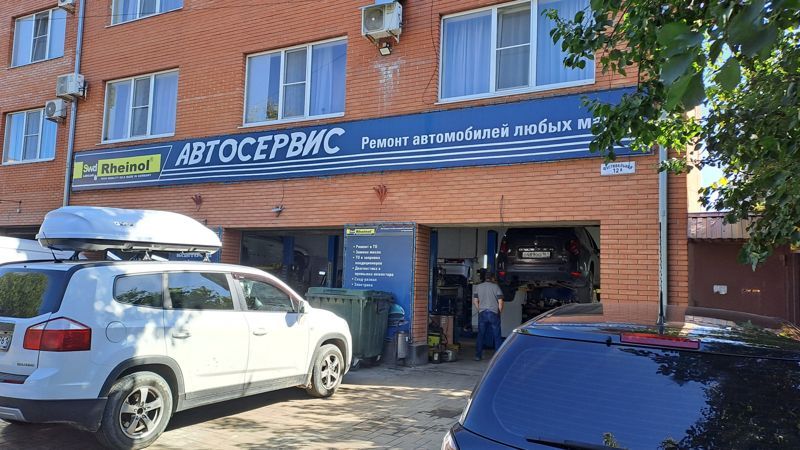
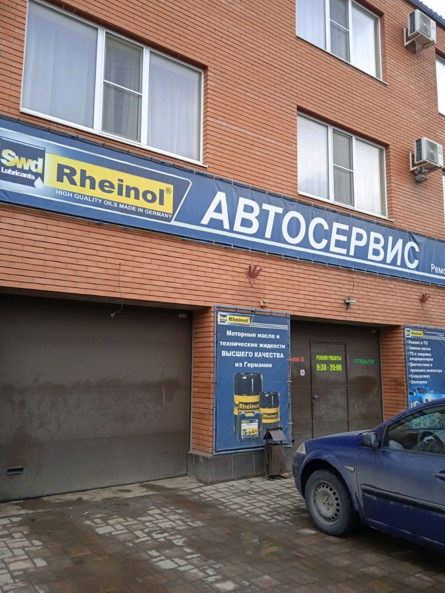

Ростов-на-Дону, Фестивальная ул., 12А
Шиномонтаж и развал-схождение на Фестивальной
Обслуживаем отечественные и импортные автомобили. Оплата картой.
4,9 на Яндекс Картах · 378 оценок
Что делаем
Стоимость работ уточняйте по телефону — цен в карточке сервиса нет.
Шиномонтаж
Снять, поставить и отбалансировать колёса.
Развал-схождение
Настройка углов установки колёс.
Сервисное обслуживание
Базовое обслуживание отечественных и импортных автомобилей.
Диагностика и ремонт
В отзывах клиенты упоминают диагностику, ремонт двигателя и рулевой рейки.

О сервисе
Автосервис в Ростове-на-Дону, Фестивальная ул., 12А. В отзывах на Яндекс Картах клиенты хвалят персонал, запчасти и скорость работы.
- Оплата картой
- Отечественные и импортные марки
Фото сервиса
Боксы, подъёмники и работа мастеров — снимки из карточки на Яндекс Картах.
Как нас найти
- Адрес
- Фестивальная ул., 12А, Ростов-на-Дону
- Телефон
- +7 (863) 294-38-94
- Режим работы
- Уточняйте по телефону